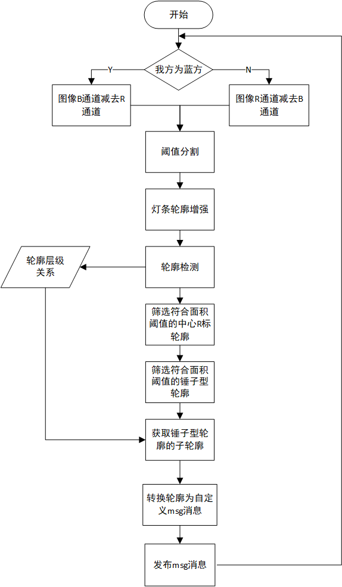

RMUC2022能量机关识别器
- Authors
HarryWen
- Contact
- Date
2022/09/10
- Copyright
This document has been placed in the public domain.
概述
在RMU竞赛中， 能够准确预测和击打能量机关是极为重要的。而预测的基础是识别器能够准确识别中心R标和区分出未被激活的能量机关。 不同于装甲板灯条的识别，能量机关目标形状不规则，不能简单的使用外接矩形去完成识别任务。该文档将阐述如何使用传统视觉对不规则形状的目标进行识别。
Note
能量机关识别器的相关代码位于 bubble_detector/bubble_rune 模块下
1 流程介绍
1.1 图像预处理
图像二值化处理：分离图像的BGR通道。将其中的B和R两通道相减，并对相减的结果进行阈值分割，得到需要击打颜色的二值化图像
灯条轮廓增强：对二值化图像进行多次图像形态学上的闭运算，使灯条轮廓变得完整。（此处需避免多次闭运算导致不同扇叶灯条黏连）
功能实现
均使用OpenCV内的函数实现
cv::split() 将图像从多通道分离为多个单通道图像。
cv::threshold(type = cv::THRESH_BINARY) 筛选出图像中需要的灰度部分，并转化为二值化的图像。
cv::morphologyEx(op = cv.MORPH_CLOSE) 形态学闭操作, 闭合轮廓。内部形参定义请参见 morphologyEx
核心代码实现
获取指定颜色的二值化图像
cv::Mat GrayFilter(cv::Mat &image, bool mode, int grayThres)
{
cv::Mat grayImg;
cv::Mat channels[3];
cv::split(image, channels);
if (mode)
{
grayImg = channels[2] - channels[0];
}
else
{
grayImg = channels[0] - channels[2];
}
cv::threshold(grayImg, grayImg, grayThres, 255, cv::THRESH_BINARY);
return grayImg;
}
1.2 识别未被激活的能量机关
能量机关包含两种形态，一种为未被激活的锤子形和激活成功的宝剑形。
由于两者的面积不同，通过设置合适的面积上下限，筛选出二值化图像中的锤子形轮廓。
根据轮廓的层级关系，提取锤子型轮廓的子轮廓，即目标轮廓。
功能实现
filterArea() 筛选出符合面积要求的轮廓
cv::contourArea() 轮廓面积计算
cv::findContours(mode = cv::CV_RETR_TREE) 检测所有轮廓，便于提取父级轮廓的内部子轮廓。内部详细定义请参见
核心代码实现
筛选轮廓的面积
std::vector<std::vector<cv::Point>> filterArea(std::vector<std::vector<cv::Point>> contours, int minArea, int maxArea)
{
std::vector<int> hierarchyIdList;
std::vector<std::vector<cv::Point>> matchContoursList;
for (int contours_id = 0; contours_id < contours.size(); contours_id += 1)
{
const std::vector<cv::Point> &contour = contours[contours_id];
double area = cv::contourArea(cv::Mat(contour));
if (minArea < area && area < maxArea)
{
matchContoursList.push_back(contours[contours_id]);
hierarchyIdList.push_back(contours_id);
}
}
return matchContoursList;
}
1.3 识别能量机关的中心R标
中心R标相较于能量机关的扇叶面积较小，故直接采用面积法，筛选较小面积即可完成中心R标的轮廓提取
功能实现
与识别未被激活的能量机关部分相同
相关内容
在识别之后需要对能量机关轨迹进行预测，具体详见能量机关预测器
结语
文档阐述了当前版本Bubble中能量机关识别器实现的过程。使用面积法筛选未被激活能量机关的轮廓。然后使用轮廓层级关系获取轮廓子层级即需要击打的目标，从而完成能量机关的识别任务。